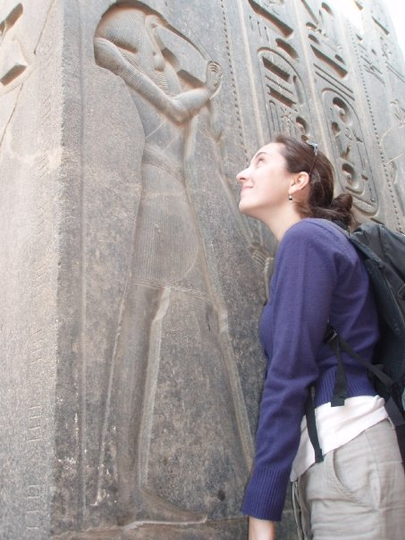

I’ve been inhaling books since I could first distinguish sentences. Not much has changed over the years: I still spend a disproprotionate amount of my free time reading books - I love everything from funeral director memoirs to graphic novels to exposes on Victorian domestic life. Libraries and museums have always been safe havens (and heaven) for me. I am eternally grateful to my parents for encouraging an engagement with literature and art, because I believe that a deep appreciation of these areas is what makes us human.
To motivate me to read more, I’ve been writing a book review blog since 2011: You can find it here. It has also proven a great resource for family who are looking for new books to read, and a central place for me to track my newest literary discoveries.
The name “Thothy Blog” refers to the Ancient Egyptian god of reading and knowledge: the ibis-headed Thoth. I finally had a chance to visit Egypt in 2009; here’s a photo of me appreciating Thoth’s majesty:
